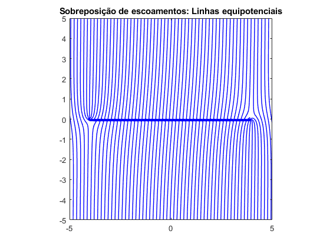

clear
[x,y] = meshgrid(-5:0.1:5,-5:0.1:5);
z = x + 1i*y;
theta = angle(z);
r = abs(z);
W = 0;
dw_dz = 0;
rho = 1.225;
P_t = 100002.45;
check = 0;
msg1 = "Select the number of flow elements to evaluate";
opt1 = ["1", "2", "3", "4"];
choice = menu(msg1, opt1);
for i=1:1:choice
msg2 = sprintf("Select the flow element number %d", i);
opt2 = ["Sink/Source","Vortex","Uniform Flow"];
flow_element = menu(msg2, opt2);
switch flow_element
case 1
check = 1;
prompt = {'Enter value of m:','Enter coordinate x:','Enter coordinate y:'};
dlgtitle = 'Values of source/sink';
answer = inputdlg(prompt,dlgtitle);
m = str2double(answer{1});
b = str2double(answer{2});
a = str2double(answer{3});
sour_sink = (m/(2*pi)).*(log(z-(b + 1i*a)));
dw_sour_sink = (m./(2*pi.*(z-(b+1i*a))));
W = W + sour_sink;
dw_dz = dw_dz + dw_sour_sink;
case 2
check = 1;
prompt = {'Enter value of Gamma:','Enter coordinate x:','Enter coordinate y:'};
dlgtitle = 'Values of vortex';
answer = inputdlg(prompt,dlgtitle);
Gamma = str2double(answer{1});
b = str2double(answer{2});
a = str2double(answer{3});
vortex = -(1i*Gamma/(2*pi))*log(z-(b+1i*a));
dw_vortex = -((1i*Gamma)./(2*pi*(z-(b+1i*a))));
W = W + vortex;
dw_dz = dw_dz + dw_vortex;
case 3
if check == 0
check = 2;
end
prompt = {'Enter value of U:'};
dlgtitle = 'Values of uniform field';
answer = inputdlg(prompt,dlgtitle);
U = str2double(answer{1});
uniform = U*z;
dw_uniform = U;
W = W + uniform;
dw_dz = dw_dz + dw_uniform;
otherwise
end
end
phi = real(W);
psi = imag(W);
V = conj(dw_dz);
v = abs(V);
P_e = P_t - (rho.*(v.^2)/2);
plot_phi(phi, 0);
plot_psi(psi, 0);
if check == 1
plot_vel(v, 0);
plot_press(P_e, 0);
end
